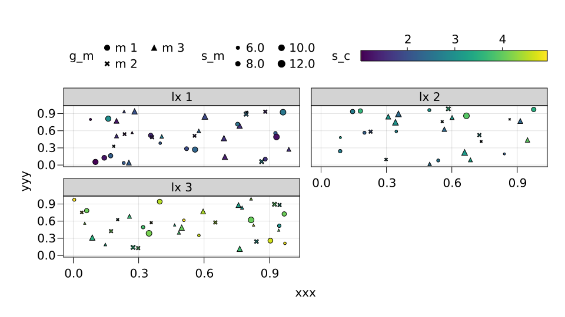
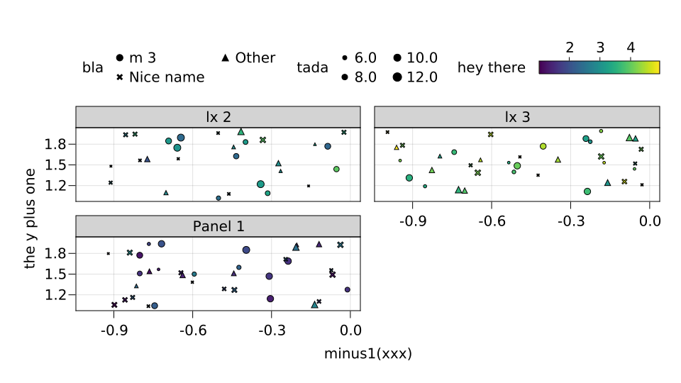
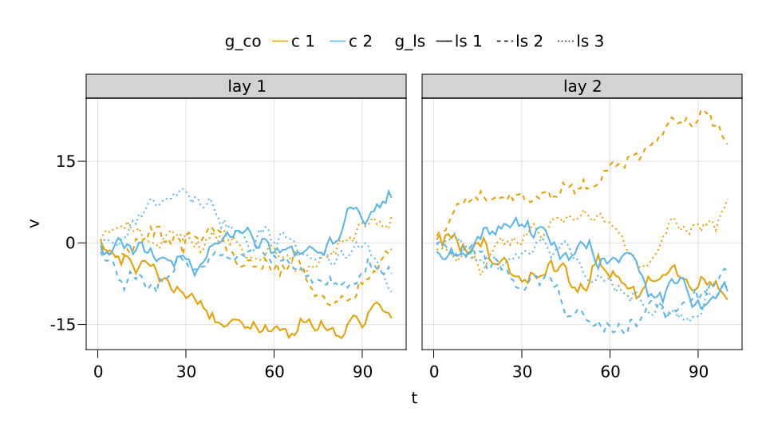
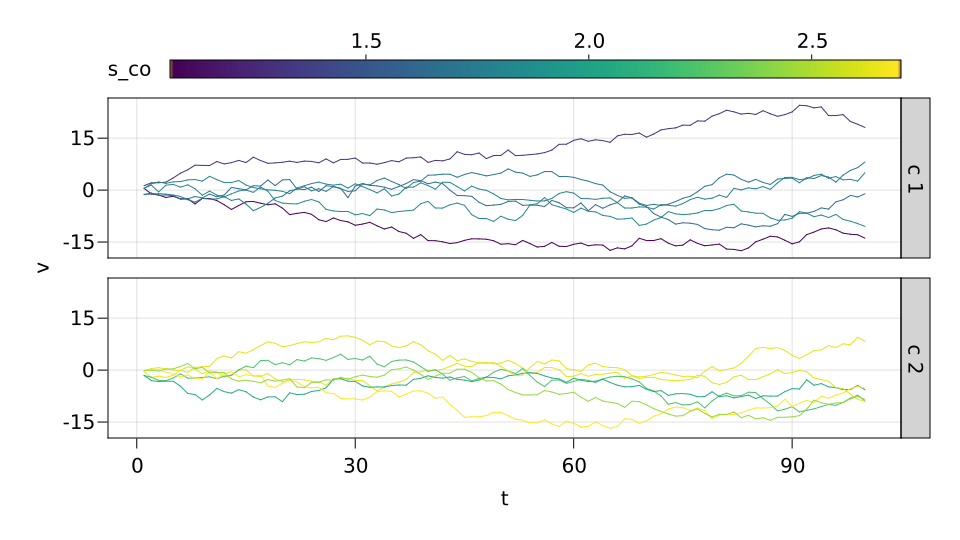

using DataFrames, CategoricalArrays
using DataAPI: refarray
cs_df = let
N = 100
dummy_df = DataFrame(
xxx = rand(N),
yyy = rand(N),
s_m = rand(5:13, N),
g_c = rand(["c 1", "c 2", "c 3"], N) |> categorical,
g_lx = rand(["lx 1", "lx 2", "lx 3"], N) |> categorical,
g_m = rand(["m 1", "m 2", "m 3"], N) |> categorical
)
dummy_df[:,:s_c] = 2 .* rand(N) .+ refarray(dummy_df.g_lx)
dummy_df
endusing DataFrames, CategoricalArrays
using DataAPI: refarray
ts_df = let
g_la = ["lay 1", "lay 2"]
g_co = ["c 1", "c 2"]
g_ls = ["ls 1", "ls 2", "ls 3"]
ts_df = DataFrame(Iterators.product(g_la, g_co, g_ls))
grps = [:g_la, :g_co, :g_ls]
rename!(ts_df, grps)
transform!(ts_df, grps .=> categorical, renamecols = false)
transform!(ts_df, :g_co => (x -> refarray(x) .+ rand.()) => :s_co)
transform!(ts_df, :s_co => ByRow(float) => :s_co)
ts_df[:,:grp] = 1:size(ts_df, 1) |> categorical
function rw_nt(T)
function(i)
rw = cumsum(randn(T))
DataFrame([(t = t, v = v, grp = i) for (t, v) in enumerate(rw)])
end
end
T = 100
combine(groupby(ts_df, [grps; :s_co])) do sdf
grp = sdf.grp[1]
rw_nt(T)(grp)
end
endTabularMakie
This is how it looks.
using TabularMakie, CairoMakie
fig = lplot(Scatter, cs_df, :xxx, :yyy; color = :s_c, marker = :g_m, markersize = :s_m, layout_wrap = :g_lx)CairoScreen{Cairo.CairoSurfaceIOStream{UInt32}} with surface:
Cairo.CairoSurfaceIOStream{UInt32}(Ptr{Nothing} @0x00000000089c80c0, 960.0, 540.0, IOContext(IOStream(<file /home/runner/work/TabularMakie.jl/TabularMakie.jl/docs/build/fig_cs1.svg>)))

We can use the DataFrames.jl minilanguage to transform columns or rename them. You have the following options.
source_column => target_column_namesource_column => transformationsource_column => transformation => target_column_name
This is shown in the following example.
using CategoricalArrays: recode!
rec_1(x) = recode!(x, "m 1" => "Nice name", "m 2" => "Other")
rec_2(x) = recode!(x, "lx 1" => "Panel 1")
minus1(x) = x .- 1
fig = lplot(Scatter, cs_df,
:xxx => minus1,
:yyy => ByRow(x -> x + 1) => "the y plus one";
color = :s_c => "hey there",
marker = :g_m => rec_1 => "bla",
markersize = :s_m => :tada,
layout_wrap = :g_lx => rec_2
)CairoScreen{Cairo.CairoSurfaceIOStream{UInt32}} with surface:
Cairo.CairoSurfaceIOStream{UInt32}(Ptr{Nothing} @0x00000000090065b0, 960.0, 540.0, IOContext(IOStream(<file /home/runner/work/TabularMakie.jl/TabularMakie.jl/docs/build/fig_cs2.svg>)))

using TabularMakie, CairoMakie
fig = lplot(Lines, ts_df, :t, :v; color = :g_co, layout_x = :g_la, linestyle = :g_ls, linewidth = 2)CairoScreen{Cairo.CairoSurfaceIOStream{UInt32}} with surface:
Cairo.CairoSurfaceIOStream{UInt32}(Ptr{Nothing} @0x0000000009efe140, 960.0, 540.0, IOContext(IOStream(<file /home/runner/work/TabularMakie.jl/TabularMakie.jl/docs/build/fig_ts1.svg>)))

using TabularMakie, CairoMakie
fig = lplot(Lines, ts_df, :t, :v; color = :s_co, layout_y = :g_co, group = :grp )CairoScreen{Cairo.CairoSurfaceIOStream{UInt32}} with surface:
Cairo.CairoSurfaceIOStream{UInt32}(Ptr{Nothing} @0x000000000a2dca30, 960.0, 540.0, IOContext(IOStream(<file /home/runner/work/TabularMakie.jl/TabularMakie.jl/docs/build/fig_ts2.svg>)))

TabularMakie.lookup_symbols — MethodThis function replaces group indicators (numbers, categories) by attributes that can be plotted (:solid, :red, etc...)